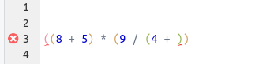

Learning Objectives
- Get some basic familiarity with R and RStudio
- Learn how and why to use RStudio Projects
- Understand objects, functions, and how to use them
- Understand the concepts of
vector and data.frame
- Explore the structure and the content of a
data.frame
- Learn about how R handles missing data
Before we start
Notes on Terminology
- The terms “directory” and “folder” are used interchangeably.
Why R?
R is a versatile, open source programming/scripting language that’s particularly useful for statistics and data visualization.
Yes, there is a learning curve, and many of us just want to get on with our analysis –
but investing in learning R will pay off:
R gives you greater flexibility to do anything you want.
A greater reproducibility of scripting vs clicking.
R is highly interdisciplinary – e.g. nowadays very useful for analyzing sequencing data,
but can also be used to create maps and perform GIS analyses, and so on!
R is more than a platform to perform analysis. When combined with Markdown (a very simple text markup language), you can easily use R to produce reports that integrate code, results, and text, as well as for websites, slide decks, books, and so on!
Furthermore, R:
Start an RStudio Server session at OSC
- Go to https://ondemand.osc.edu.
- In the blue top bar, click the
Interactive Apps dropdown menu.
- All the way in the bottom of the dropdown, click
RStudio Server (Owens and Pitzer).
- In the submission form, keep all the defaults, unless you want to select a particular project, and then click
Launch.
- Wait until the top bar of the little job box turns green and says “Running”, and then click the blue
Connect to RStudio Server button in the bottom of the Box.
- You’re in!
R vs. RStudio
R simply provides a “console” to type your commands. However, because you want to save your sequences of commands in scripts, regularly examine output such a graphics, and so on, you can work much more effectively in an environment that provides all of this side-by-side.
We will use RStudio, an excellent “Integrated Development Environment” (IDE) for R. In RStudio, we have a single interface to write code, navigate the files found on our computer, inspect the objects we create, and visualize the plots we generate.
RStudio is divided into 4 “panes”:
- Top-left: The editor for your scripts and documents.
- Bottom-left: The R console.
- Top-right: Your environment/history.
- Bottom-left: Your files/plots/packages/help/viewer.
The placement of these panes and their content can be customized.
Interacting with R
R as a calculator
The lower-left RStudio pane, i.e. the R console, is where you can interact with R directly.
The > sign is the R “prompt”. It indicates that R is ready for you to type something.
Let’s start by performing an amazing division:
203 / 2.54
## [1] 79.92126
R does the calculation and prints the result, and then you get the > prompt again. (The [1] may look a bit weird when there is only one output element; if there were many, it would keep count of them.)
You can generally use R as a calculator in this way, with standard symbols:
203 * 2.54 # Multiplication
## [1] 515.62
203 + 2.54 # Addition
## [1] 205.54
Let’s try some random things!
203 - 2.54
## [1] 200.46
Okay! So R just ignores any extra spaces.
How about:
203 +
Now the prompt is a +. What is going on?
R is waiting for you to finish the command, since you typed an incomplete command: something has to come after the + to be added to what came before.
OK, so this was easy, but in practice, you will type incomplete commands without realizing you did so. Just remember that when you see the + prompt, you are missing something in your command: oftentimes, you have forgotten a closing parenthesis ) or accidentally opened up an unwanted opening parenthesis (.
Note also that RStudio will alert you in the script window when you are making syntax errors:

Now we just type a number:
203
## [1] 203
R will print the number back to us! It turns out that the default, implicit action that R will perform on anything you type is to print it back to us (it is calling a function called print() under the hood).
What if we try that with some text?
Awesome
## Error in eval(expr, envir, enclos): object 'Awesome' not found
What seems to be going wrong here?
Whenever you type a character string, R expects to find an object with that name. (Or, if you would use parentheses after the string, like string(), it will expect a function.)
We can get R to print character strings back to us, and work with them in other ways, as long as we quote the strings:
"Well, I'm really liking R so far."
## [1] "Well, I'm really liking R so far."
Getting Organized
Need for Scripts
We can go along like this, typing commands directly into the R console. But there won’t be an easy way to keep track of what we’ve done.
It’s best to write your code in separate files, i.e. “scripts”. And when we start creating scripts, we need to worry about how we organize the scripts and data for a project.
So let’s pause for a moment and talk about file organization.
Creating an RStudio Project
It is good practice to keep a set of related data, analyses, and text self-contained in a single folder, and use that folder as the working directory.
Then, all of the scripts within this folder can use relative paths to files that indicate where inside the project a file is located (as opposed to absolute paths, which point to where a file is on a specific computer).
More on absolute vs relative paths
An absolute path always contains the root element (/ on Unix systems such as Linux and Mac; typically C:\ on Windows) and the complete directory list to locate file. For that reason, if you move a file around on your computer, or move it to a different computer, an absolute path will practically never work. On the other hand, as long as the files remains in the same location, you can refer to it with an absolute path regardless of where you are on your computer.
C:\Documents\2020-12_microbiomics-workshop\scripts\intro-to-R.R # An absolute path
scripts/intro-to-R.R # A relative path
A relative path assumes a certain starting point (the “working directory”), so you need to be at the correct starting point for the path to work. On the other hand, if you keep all files associated with a project within a single parent directory, and keep the internal directory structures constant, a relative path will keep working, even if you move the project directory, open it on a different computer, or share it with a collaborator.
You should avoid using absolute paths as much as possible.
P.S.: Another point to note is that in R you can (and should) always use a forward slash / to delimit directories, even if you are on a Windows machine.
Working this way makes it a lot easier to move your project around on your computer and share it with others without worrying about whether or not the underlying scripts will still work.
A challenge of using relative paths is that you need to make sure you are always at the same starting point (your working directory). RStudio provides a helpful set of tools to do this through its “Projects”. When you use a Project, your working directory will always be the top-level directory of that project, and you can safely use relative paths to point to other files.
Let’s create an RStudio Project:
Under the File menu, click on New project, choose Existing directory, then click the Browse and find your 2020-12_microbiomics-workshop folder.
Click on Create Project.
Now, RStudio will reload with the newly created Project open. One consequence of this is that your working directory should be the Project’s directory. Let’s see what our working directory is using getwd():
getwd()
From now on, we will avoid the temptation (?) to change our working directory, and refer to all files relative to our project’s top-level directory.
Creating an R script
Create a new R script (File > New File > R Script)
Click File > Save As to save the script.
Save it in your scripts subfolder (e.g. ~/2020-12_microbiomics-workshop/scripts/) using the file name intro-to-R.R.
Interacting with the R console from your script
I recommend always typing your commands into a script, which you’ll save for later reference, and then executing the commands from there.
We want to make sure to save our wonderful subtraction, so start by typing the following into the R script in the top-left pane:
# R intro
203 / 2.54
Now place the cursor on the line with 20 - 13 and type Ctrl + Enter. The command will be copied to the R console and executed, and then the cursor will move to the next line. (You can also highlight a bunch of code and execute the block all at once with Ctrl + Enter.)
Objects
Assigning stuff to objects
We can assign pretty much anything to an object with the assignment operator, <-. (This is a smaller-than sign < followed by a dash -.) For example:
wingspan_in <- 203 / 2.54
Type that into your script, and use Ctrl + Enter to send it to the console.
If you’ve assigned a number to an object, you can then use it in further calculations:
wingspan_in * 2.54
## [1] 203
Object names
Objects can be given any name such as x, current_temperature, or subject_id.
Some pointers on object names:
Make them descriptive yet not too long.
They cannot start with a number (2x is not valid, but x2 is).
Note: R is case sensitive (e.g., weight is different from Weight).
A style recommendation is to avoid capital letters (e.g., totalWeight) and dots (total.weight) to separate words. Instead, stick to lowercase, and use underscores (total_weight) to separate words.
Challenge
What is the value of y after doing all of the following?
x <- 50
y <- x * 2
x <- 80
Solution (click here)
Objects don’t get linked to each other, so if you change one, it won’t affect the values of any others. Therefore, y will keep the value 100.
Objects in your workspace
The objects you create get added to your “workspace”. You can list the current objects with ls(). RStudio also shows the objects in the Environment panel.
Functions
Earlier, we managed to divide 20 by 13 and got 1.5384615, but what if we wanted to go even further and round the result? Like for many things you may want to do in R, there is a function for that.
Functions are used by typing their name followed by parentheses:
round(1.538462)
## [1] 2
Here, round() is a function that rounds a number. The value in the parentheses is called a function “argument”, which is used in the execution of the function (usually, the primary argument is converted by the function, like here).
Using named arguments
Functions can have more than one argument, and some of them may have default values.
There are some functions that take many arguments and you can imagine that it might get confusing trying to keep them in order. In that case, it is often better to explicitly name the arguments.
When you type a function name and pause for a moment, the arguments, their names, and their default values (i.e., the value if the argument is left unspecified) will be shown.
What is the second argument for round() and what is it default value?
round has a second argument digits whose default is 0, such that numbers will be rounded to whole integers.
Below is an example using named arguments with round(). When the arguments are named, the order doesn’t matter! You might also enter the first few important arguments positionally, and later ones by naming them.
round(x = 1.538462, digits = 2)
round(digits = 2, x = 1.538462)
round(1.538462, digits = 2)
Note that we can also directly plug in objects:
my_number <- 20 / 13
round(my_number)
Or do the initial division inside the function:
round(20 / 13)
Or nest functions – here we are adding the log() function:
log(round(20 / 13 ))
What is the order of execution in the last command?
round() is executed first, and the output of round() is used as the input of log().
Getting help
As we saw, when we typed round and paused for a moment, we got a pop-up with information about the function.
Alternatively, you could type:
?round
… and the documentation for the function will show up in the lower-right pane.
This documentation is often a bit too detailed, and can be terse, so it takes some practice to read. I generally focus on Usage and Arguments, and then on Examples at the bottom.
Otherwise, for instance when you don’t know a function’s name, or even whether a function may or may not exist, Google is your friend! Try typing “rounding a number in r”, and see if you get useful results.
Vectors
A vector is the most common and basic data structure in R, and is composed of a series of values of the same type.
We can assign a series of values to a vector using the c() function. For example:
wingspan_cm <- c(11.8, 203, 18.2, 27.9)
A vector can also contain characters – but again, quoting is important, or R will think the strings are objects:
birds <- c("hummingbird", "bald_eagle", "chickadee", "cardinal")
As mentioned, all of a vector’s elements are the same type of data. The function class() indicates what kind of data you are working with:
class(wingspan_cm)
## [1] "numeric"
class(birds)
## [1] "character"
Data types in R
These classes are different types of atomic vectors, R’s simplest data type. The 4 most common atomic vector types are:
"numeric" (or "double") – floating point numbers"character" – character strings"logical" – TRUE and FALSE (also known as boolean)"integer" – integer numbers
Vector coercion: when not all elements are of the same type.
What happens if we try to mix vector types (e.g., “character and numeric”) in a single vector? R converts them to all be the same type, and it does so without telling us about it.
What will happen in each of the following examples?
(Hint: use class() to check the data type of your objects)
num_char <- c(1, 2, 3, "a")
num_logical <- c(1, 2, 3, TRUE)
char_logical <- c("a", "b", "c", TRUE)
tricky <- c(1, 2, 3, "4")
You’ve probably noticed that objects of different types get converted into a single, shared type within a vector. In R, we call converting objects from one class into another class coercion. These conversions happen according to a hierarchy, whereby some types get preferentially coerced into other types.
Vectorization!
Let’s say we wanted to convert our wingspans to inches, which means that we need to divide each length in centimeters by 2.54.
How could we do this quickly?
# wingspan_cm <- c(11.8, 203, 18.2, 27.9) # Still working with the same wingspan vector
wingspan_in <- wingspan_cm / 2.54
wingspan_in
## [1] 4.645669 79.921260 7.165354 10.984252
Why does this work?
R “vectorizes” operations whenever it can. This means that in this case, each element in the vector weights_cm will be divided by 2.54 – this number is “vectorized” or recycled to match the number of weights.
For a programming language, this is unusual behavior – but it is very useful!
Similarly, we can use two vectors of equal length to quickly operate on each element of the vector:
size_cm <- c(7.62, 90, 13.1, 21.8)
ratio <- wingspan_cm / size_cm
ratio
## [1] 1.548556 2.255556 1.389313 1.279817
Data structures in R
While vectors can be composed of one of several data types, they, in turn, are one of several data structures that R uses. Other important ones are:
data.frame – A rectangular data structure where each column can be a different data type.matrix – A rectangular data structure of a single data type.list – A very flexible data structure that we will not further discuss here.factor – Character strings with a discrete set of possible values, used mostly for statistical tests and when plotting.
Data Frames
A data frame (formal object type: data.frame) is a rectangular data structure in which rows are observations and columns are variables. Each column can be of a different type (numeric, character, etc.), but since each column is a vector, all the cells within a column are of the same type. Also, due to the rectangular structure, all columns have the same length.
Create, write, and read a data frame
We can easily create a data frame by hand using the data.frame() function and a column_name = column_vector notation for each column:
birds_df <- data.frame(species = birds,
wingspan = wingspan_cm,
size = size_cm,
n_eggs = c(2, 2, 7, 4))
Most often, however, you’ll be reading your data frames from files. And you’ll also want to save your modified data frames.
So let’s practice writing and reading a data frame:
# Write a data frame to CSV format:
write.csv(x = birds_df, file = "bird-data.csv", row.names = FALSE)
Now we read our data frame back in:
birds_df_2 <- read.csv('bird-data.csv')
## Let's compare the two data frames:
birds_df
birds_df_2
Inspecting a Data Frame
Use str() to look at the structure of the data.
str(birds_df)
This shows that there are 34,786 rows and 13 columns, and then for each column, it gives information about the data type and shows the first few values.
Another useful function is summary().
summary(birds_df)
Finally, in RStudio, we can click on an object in the Files pane, or equivalently, type:
View(birds_df)
An Overview of Functions to Get an Overview
- Size:
dim() – returns a vector with the number of rows in the first element, and the number of columns as the second element (the __dim__ensions of the object)nrow() – returns the number of rowsncol() – returns the number of columnslength() – for a dataframe, returns the number of columns. Very commonly used for vectors, for which it will return the number of elements.
- Content:
head() – shows the first 6 rowstail() – shows the last 6 rows
- Names:
names() – returns the column names (synonym of colnames() for data.frame objects)rownames() – returns the row names
- Summary:
str() – structure of the object and information about the class, length and content of each columnsummary() – summary statistics for each columnskimr::skim() – very nice summary, need to install skimr with install.packages(skimr).
Miscellaneous
Missing data
As R was designed to analyze datasets, it includes the concept of missing data (which is uncommon in other programming languages). Missing data are represented as NA (for “Not Available”).
heights <- c(2, 4, 4, NA, 6)
When doing operations on numbers, most functions will return NA if the data you are working with include missing values. It is a safer behavior as otherwise you may overlook that you are dealing with missing data. You can add the argument na.rm=TRUE to calculate the result while ignoring the missing values.
mean(heights)
mean(heights, na.rm = TRUE)
If your data includes missing values, you may want to become familiar with the functions is.na() and na.omit().
## Extract those elements which are not missing values:
heights[!is.na(heights)]
## Shortcut to do the same:
na.omit(heights)
Packages
The functions that we have been using so far (and many, many more) are available in any R session as soon as you start R (we refer to this functionality as “base R”). However, when doing specialized analyses such as in microbiomics, rather than coding up everything using the basic building blocks in R, we can load add-on code that will allow us to use “high-level” functions specifically geared towards the effective analyses of such data.
This type of add-on code is distributed in R packages. The default repository for R packages is CRAN. The packages on CRAN have undergone a certain level of vetting, and can be easily installed with install.packages() function, for instance:
install.packages("tidyverse")
If you’re doing bioinformatic analyses in R, as we will be doing, you will encounter packages that are not on CRAN but are on “Bioconductor”. To install a package from Bioconductor, use the BiocManager package – for example:
install.packages("BiocManager") # Install the BiocManager package
BiocManager::install("dada2") # Install the edgeR package from Bioconductor
S4 Objects
“S4” objects are most certainly an advanced R topic, but because many bioinformatics packages use them, we will briefly discuss them here. In a nutshell, S4 objects allow for complicated, multifaceted datasets (such as multiple dataframes with distinct but related data as well as with metadata) to be represented in a single object.
TODO: EXPAND
Saving your data
Some very brief notes on saving your data in R:
We already saw the use of write.csv() to save data frames, and you can also use one of readr’s writing functions.
To save R objects “as is”, which can be useful when you’re working with complex S4 objects that may have taken a long time to generate, like a phyloseq object, you can use:
# Save an object:
saveRDS(my_phyloseq_object, "my_phyloseq_object.RDS")
# Load it again in a new R session:
my_phyloseq_object <- readRDS("my_phyloseq_object.RDS")
A general recommendation is to not rely on your R session to keep things around, especially “overnight”. Devise your workflow such that you are always saving important objects and results outside of R, and can always use your R script to restart from where you left off.
Where to go from here
This document only scratched the surface of R, but it has hopefully provided a good starting point for working with R.
My recommendations on where to go from here would be exactly the same regardless of whether you just wanted to make general progress with R, or wanted learn R things that you can apply when working with microbiomics packages. They are:
Learn about data wrangling with tidyverse packages, especially dplyr and tidyr. Start here
Learn about plotting with ggplot2. Start here
Both of those topics and some other material are also covered in this excellent Carpentries workshop R for Reproducible Scientific Analysis.
If you want to start with a book, I would recommend Wickham & Grolemund’s “R for Data Science”, which is freely available on the web in a really nice format here.
Bonus Material: Subsetting
Basic subsetting of data frames and vectors
We can pull out parts of a data frame using square brackets. We need to provide two values: row and column, with a comma between them.
For example, to get the element in the 1st row, 1st column:
surveys[1, 1]
To get the element in the 2nd row, 7th column:
surveys[2, 7]
To get the entire 2nd row, leave the column part blank:
surveys[2, ]
And to get the entire 7th column, leave the row part blank:
sex <- surveys[, 7]
You can also refer to columns by name, in multiple ways:
sex <- surveys$sex # Very commonly used syntax!
sex <- surveys[, "sex"]
When we pull out a single column, the result is a vector. To pull out individual values from a vector, we can again use square brackets, but now we only provide a single number:
sex[1]
sex[10000]
Slicing
You can pull out larger slices from the vector by providing vectors of indices:
sex[c(1,3,5)]
The : operator gives you a sequence of consecutive values, which you can also using for slicing:
surveys[1:3, ] # First three rows, all columns
surveys[1, 1:3] # First row, first three columns
surveys[2:4, c(6, 8)] # Rows 2-4, columns 6 and 8
Conditional subsetting
Another common way of subsetting is by using a logical vector. TRUE will select the element with the same index, while FALSE will not:
weight_g <- c(21, 34, 39, 54, 55)
weight_g[c(TRUE, FALSE, FALSE, TRUE, TRUE)]
Typically, these logical vectors are not typed by hand, but are the output of other functions or logical tests. For instance, if you wanted to select only the values above 50:
weight_g > 50 # will return logicals with TRUE for the indices that meet the condition
## so we can use this to select only the values above 50
weight_g[weight_g > 50]
You can combine multiple tests using & (both conditions are true, AND) or | (at least one of the conditions is true, OR):
weight_g[weight_g > 30 & weight_g < 50]
weight_g[weight_g <= 30 | weight_g == 55]
weight_g[weight_g >= 30 & weight_g == 21]
Here, > for “greater than”, < stands for “less than”, <= for “less than or equal to”, and == for “equal to”. The double equal sign == is a test for numerical equality between the left and right hand sides, and should not be confused with the single = sign, which performs variable assignment (similar to <-).
A common task is to search for certain strings in a vector. One could use the “or” operator | to test for equality to multiple values, but this can quickly become tedious. The function %in% allows you to test if any of the elements of a search vector are found:
animals <- c("mouse", "rat", "dog", "cat", "cat")
# return both rat and cat
animals[animals == "cat" | animals == "rat"]
animals[animals %in% c("cat", "rat")]
